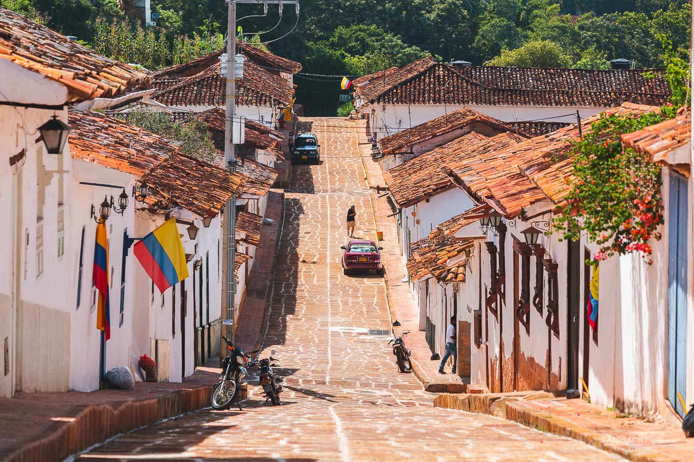

5 Sitios Turisticos de Santander
Dentro de los principales lugares que tenemos por conocer son Barichara, la cual es muy popular por su belleza y antigua arquitectura, gracias a las manos artesanas que labraron piedra a piedra para construir sus casas e iglesias. San Gil, es conocida por ser la capital del deporte de aventura por Colombia. Barbosa, llamada "Puerta de oro de Santander", por su privilegiada ubicación geográfica, su valle vistoso a orillas del río Suárez. Zapatoca, ha sido considerada como la “ciudad levítica” de Colombia, y es caracterizada por sus artesanias fabricadas en pauche. Curiti, ofrece espectaculares senderos ecológicos para que los turistas disfruten de las caminatas ecoturísticas con gran variedad de flora y fauna y excelente clima,el parque natural el Santuario Localizada en la Vereda la Cantera, exactamente detrás de la Escuela. Guadalupe, este lugar se encuentra ubicado en los cerros orientales de Bogotá, es llamado cerro de Guadalupe, porque los españoles que llegaron por primera vez al lugar, le colocaron este nombre, en honor a la virgen de Guadalupe de Badajoz.
